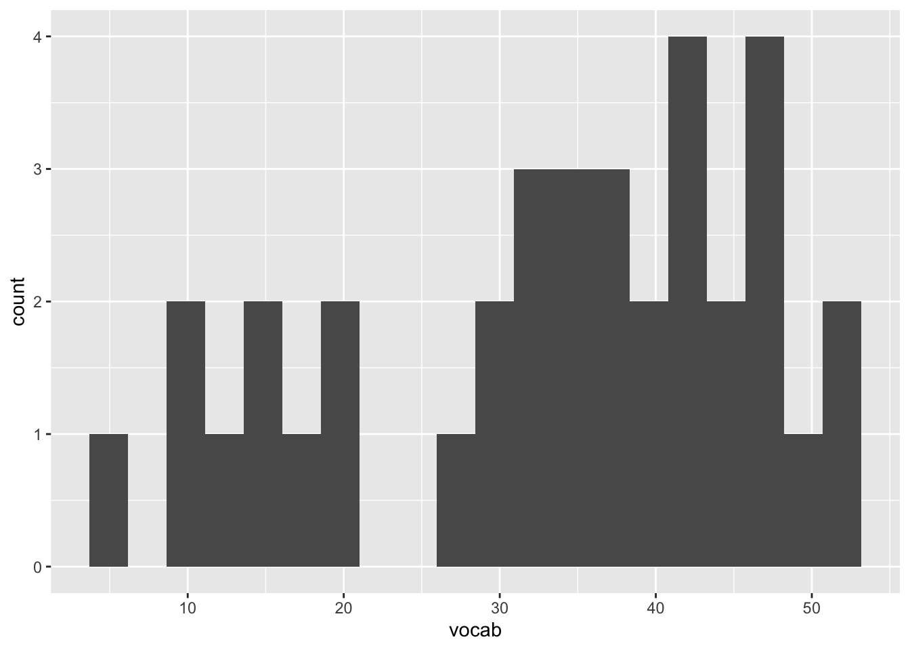
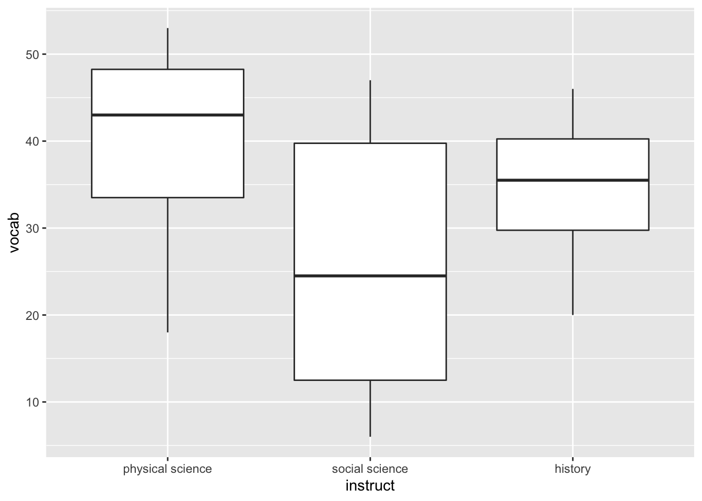

Load necessary packages.
needs(tidyverse, rio, here, knitr, kableExtra, misty, janitor, rstatix, psych) Import data.
df_2 <- misty::read.sav(here("assignments_data/Lab3_Vocab.sav"),
use.value.labels = TRUE) %>%
clean_names() # cleaning up variable namesCalculate descriptive statistics.
describe(df_2) %>%
select(n, mean, sd, skew, kurtosis, se)## n mean sd skew kurtosis se
## idnum 36 18.5 10.54 0.00 -1.30 1.76
## vocab 36 33.5 12.87 -0.54 -0.87 2.14
## instruct* 36 2.0 0.83 0.00 -1.58 0.14# Histogram
ggplot(data = df_2, aes(x = vocab)) +
geom_histogram(bins = 20)
# Boxplot
ggplot(data = df_2, aes(x = instruct, y = vocab)) +
geom_boxplot()
# Homogeneity of variance
needs(car)
car::leveneTest(vocab ~ instruct, data = df_2, center = "mean")## Levene's Test for Homogeneity of Variance (center = "mean")
## Df F value Pr(>F)
## group 2 7.5054 0.002058 **
## 33
## ---
## Signif. codes: 0 '***' 0.001 '**' 0.01 '*' 0.05 '.' 0.1 ' ' 1Calculate F-ratio.
needs(afex)
aov_car(vocab ~ instruct + Error(idnum), data = df_2)## Contrasts set to contr.sum for the following variables: instruct## Anova Table (Type 3 tests)
##
## Response: vocab
## Effect df MSE F ges p.value
## 1 instruct 2, 33 139.36 4.28 * .206 .022
## ---
## Signif. codes: 0 '***' 0.001 '**' 0.01 '*' 0.05 '+' 0.1 ' ' 1Post-Hoc Comparison. Use GH.
#post-hoc
rstatix::games_howell_test(vocab ~ instruct, data = df_2,
conf.level = 0.95,
detailed = FALSE) #outputs actual estimates with GH correction## # A tibble: 3 × 8
## .y. group1 group2 estimate conf.low conf.high p.adj p.adj.signif
## * <chr> <chr> <chr> <dbl> <dbl> <dbl> <dbl> <chr>
## 1 vocab physical science social science -14 -27.6 -0.374 0.043 *
## 2 vocab physical science history -5.5 -15.5 4.46 0.363 ns
## 3 vocab social science history 8.5 -4.35 21.4 0.235 ns# p.adj is GH adjusted p valuePost-hoc contrasts.
Helmert is best for this case. Physical vs others (1, -.5, -.5); physical vs history (0, 1, -1) = 0 + -.5 + .5 = 0 –> Orthogonal!
#check the order of levels
levels(df_2$instruct)## [1] "physical science" "social science" "history"# change levels to a different order using the following code (but we don't actually need to here)
# df_2$instruct <- factor(df_2$instruct, levels = c("social science", "history", "physical science"))Step 1. Set contrasts (Helmert)
contrast1 <- c(1, -.5, -.5) #physical science vs others
contrast2 <- c(0, 1, -1) #social science vs historyStep 2. Bind vectors to temporary matrix, where constants are equal to 1/(length of vectors)
mat.temp <- rbind(constant = 1/3, contrast1, contrast2) #3 is for number of cells in the design (same as levels because only one IV)
mat.temp## [,1] [,2] [,3]
## constant 0.3333333 0.3333333 0.3333333
## contrast1 1.0000000 -0.5000000 -0.5000000
## contrast2 0.0000000 1.0000000 -1.0000000Step 3. Take the inverse of the matrix.
mat <- solve(mat.temp)
mat## constant contrast1 contrast2
## [1,] 1 0.6666667 0.0
## [2,] 1 -0.3333333 0.5
## [3,] 1 -0.3333333 -0.5#drop first column of constants
mat <- mat[, -1]
mat## contrast1 contrast2
## [1,] 0.6666667 0.0
## [2,] -0.3333333 0.5
## [3,] -0.3333333 -0.5Step 4. Run model with lm() and set contrasts: link “instruct” variable with contrast matrix
m_contrasts <- lm(vocab ~ instruct, data = df_2, contrasts = list(instruct = mat))
summary(m_contrasts)##
## Call:
## lm(formula = vocab ~ instruct, data = df_2, contrasts = list(instruct = mat))
##
## Residuals:
## Min 1Q Median 3Q Max
## -22.000 -10.000 1.750 9.375 21.000
##
## Coefficients:
## Estimate Std. Error t value Pr(>|t|)
## (Intercept) 33.500 1.968 17.026 <2e-16 ***
## instructcontrast1 9.750 4.174 2.336 0.0257 *
## instructcontrast2 -8.500 4.819 -1.764 0.0870 .
## ---
## Signif. codes: 0 '***' 0.001 '**' 0.01 '*' 0.05 '.' 0.1 ' ' 1
##
## Residual standard error: 11.81 on 33 degrees of freedom
## Multiple R-squared: 0.2061, Adjusted R-squared: 0.158
## F-statistic: 4.284 on 2 and 33 DF, p-value: 0.02218Level 1 vs later is 9.75 (instruct 1): first half of the table from the slides = instruct1 output.
If we are only using these two (2) contrasts, use alpha of 0.05/2 = 0.025 as the new alpha.
But, if you count the 3 pairwise comparisons already done in lab 2 a = 0.05/5 = 0.01. Use this since F test was significant.
So, we end up with a nonsignificant result: we fail to reject our null hypothesis. We cannot say the physical science condition is significantly different from the humanities conditions.